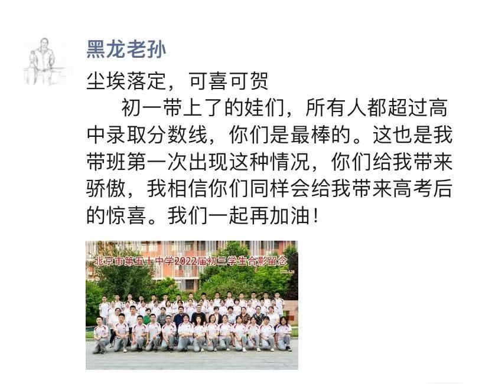

致老孙
写在前面：
篇幅有些长，阅读时记得适当休息一下眼睛。
出国久了总觉得自己的中文表达不如从前，最近也真的很忙，断断续续的写，删删改改，有些想法也未必能准确地落在文字里。加上我向来记得许多琐碎的小事，写着写着，就比原本想象的长了不少。
这篇文字算是一份私人回忆录，主要记录我记忆里的孙老师，以及与他有关的部分初中时光。它不是什么全面、客观的人物评价，只是我个人的经历、感受和理解。
我对孙老师的感情一直很复杂，有敬重和感激，也有过害怕、委屈和不满。所以这里既有温暖的回忆，也有一些不那么愉快的往事。我不想刻意美化或回避什么，只想尽可能真实地写下我所记得的他。
也希望通过我的视角以及这些文字能让同学们想起一些熟悉的片段，或是了解到孙老师那些未必被所有人知道的细心与温柔。
谨以此文，纪念孙老师，也纪念那段已经走远的初中时光。
孙老师，您好。
好像已经很久没有这样称呼过您了。毕业以后，我偶尔会想起初中的事情，想起以前的同学，也会想起您。只是这些年一直没有认真地坐下来，回忆过我们之间发生的那些事。
没想到，最后竟然是以这样的方式，重新回忆起您。
这几天，我想起了很多事情。有些是大家可能都记得的，有些或许只有我记得。那些曾经让我害怕、委屈的瞬间，那些现在想来仍然觉得好笑的往事，还有许多年以后才逐渐意识到的善意，都突然变得格外清晰。
我想把它们写下来。因为我发现，自己好像还有很多话，没来得及和您说。
初一刚入学的时候，老孙给我的印象就是严厉，而且是很有威慑力的那种严厉。我甚至记得他好像说过，怎么这一届来了这么多“傻子”。他经常拿上一届的学生和我们比较，说他们有多优秀，讲到一些他觉得理所当然的知识点时，也会忍不住问我们，怎么小学就应该会的东西，到现在还不会。七班和八班一直是他带的两个班，他嘴上总说“七八班不分家”，但转头又会开始比较两个班的表现。尤其是做西城的《学探诊》练习册时，一碰到分类讨论的题，我们总是漏掉一种情况，非得等他提醒才恍然大悟。他甚至怀疑是不是东城的水质有问题，怎么东城的孩子就总想不起来分类讨论，西城的孩子却好像没有这个毛病。我到现在都记得他那些恨铁不成钢的话，也记得试卷上被他写过的“太差”“差劲”“计算太差”“知耻而后勇”。现在回忆起来，有些甚至有点好笑，但当时坐在教室里的我们，是真的会害怕。尤其是数学本来就不算我擅长的科目，他讲课节奏对于我来说偏快，提问也快，而且随机点名让我经常担心自己突然被叫起来，答不出问题，或者在全班面前出错。如果下午有数学课，我可能从上午就开始紧张。那时候我最盼望的事情之一，就是赶快毕业，不用再上他的数学课。
其实我的成绩一直不算差。除了数学以外，其他科目都还不错，第一次期中考试，我的语文甚至考过年级第一。整个初中，我在班里的排名通常是第九到第十二名。说实话，我自己一直挺满意这个成绩的。我并不是那种一定要争第一的人，也不觉得只有考进前三名才算优秀，做事也从来不太会全力push。但和朋友后来聊起这段经历时，都有一种相似的感受：对于成绩中等偏上的学生来说，压力有时候很难被看见。老师知道你有能力，便觉得你理所当然应该考好。你偶尔考得特别好，大家会提高对你的期待；你一直保持不错的成绩，似乎也没什么值得特别表扬；可一旦退步，就很容易被认为是松懈了、不认真了。成绩最突出的学生往往更容易得到关注和理解，成绩不理想的学生有时反而会被降低期待，而我们这种夹在中间的人，似乎总要努力维持一个不能轻易掉下去的位置。我记得有一次数学考了78分，对当时的我来说其实已经算不错了，但老孙并不满意，还联系了我妈妈，问我是不是不想好好学习了。那种感觉挺委屈的，因为我并没有不努力，我只是数学真的没有其他科目那么好。
老孙以前还说过，大意是家长们最后都会听他的，有些家长起初不认同他的教育方式，觉得他对孩子太严厉，希望他温柔一点，但到后来也会认可他的做法，他也一直把这些事情骄傲地挂在嘴边常常说给我们听。所以我一直觉得，他是个很有主见、甚至有些固执的人，不太容易因为别人几句话就改变自己的要求。直到那次我妈和他沟通。她告诉他，我最近承受了很大的压力，因为我不光有普通学业上的压力，同时还要兼顾很多其他东西，学习已经让我非常疲惫，我也并不适合他的鞭策、打压式教育模式。我当时并不知道他们谈过这些，第二天老孙突然把我叫过去，我第一反应还是害怕，心里一直在想自己是不是因为数学成绩的退步而要收到面对面的批评和质问。结果他竟然向我道歉了。他说「对不起，我不知道你有这么多事情要忙，自己承受了这么大的的压力，我没有体谅到你。」我当时真的很震惊。我从来没有想过，老师尤其是像老孙这样严厉的老师，我眼里那个似乎总是那个批评学生、要求学生改正的人，会因为没有注意到我的感受，主动向我说对不起。后来他确实改变了对待我的方式，知道我太累的时候，也允许我不参加晨测。我对数学课的恐惧并没有因此一下消失，但我一直记得这件事。直到现在，我仍然觉得，一个那么有威严、那么坚持自己教育方式的人，愿意认真听进家长的话，再亲自向学生道歉，是一件很不容易的事情。而且他的改变并不只是口头上的安慰。后来随着压力慢慢减轻，我的学习状态和成绩也逐渐恢复了。现在回头看，我更加觉得，学生有时候需要的并不是更多督促，而是有人愿意看见他的难处，给他一点调整自己的空间。
其实老孙也并不是只会批评我。他也会经常夸我做事特别认真，一直都很稳。还记得初三有一次，我在班会上即兴发挥上台发言，应该是讲学校开大会之后要传递的内容。讲完以后，他特意在全班夸过我的表达能力和逻辑思维，他当时还说「没有想到咱班卫生委员的口才也这么好呢.......真是令人惊喜」等等。那时候我可能没有太把这件事放在心上，现在回头想，便觉得这些肯定对当时的我很重要，甚至可以说，一定程度上塑造了我，我的性格越来越外向也许跟这枚种子有关。
只是我和他之间始终有一点距离。他会经常夸奖我，可是我总觉得不够，是我太贪心了吗？和朋友前几天聊天时还说起，老孙和一些成绩特别好、关系特别亲近的学生，可以很自然地开玩笑，甚至互相打趣。我们也想过，为什么自己不能像他们一样，毫无顾忌地和老孙说话。不是他完全不喜欢我们，也不是我们从来没有得到过他的认可，而是好像总有一道看不见的界限。我们尊敬他，也希望得到他的欣赏，却又因为害怕他，始终没办法那么放松。现在想来，那种想靠近又不太敢靠近的心情，可能也是我对老孙的感情一直如此复杂的原因之一。
但我也想讲一件可能很多同学都不知道的小事。初中三年，我一直是班里的卫生委员。从初一开始，老孙就会把我叫到办公室，告诉我他买了卫生巾，放在自己的哪个柜子里。如果有女生来生理期却忘记带卫生巾，就可以直接找我，由我带她们到办公室去拿。他还特意告诉我，卫生巾用完了会补充，放久了也会定期更换。这样的交代不是只有初一那一次，而是从初一到初三，每一年、每个学期，他都会记得告诉我。每次换了办公室，他也会重新指给我看，自己的柜子是哪一个，卫生巾放在哪里。我记得后来确实有女生来找我拿过卫生巾，而我也按照他当初交代的方式，去办公室帮她们取。
当时年纪小，我只是觉得老孙很细心，并没有意识到这件事有什么特别。直到后来长大了，接触到更多的人，也逐渐看见女性在现实生活中会遇到怎样的处境，我才越来越觉得感慨。女性正常的生理需求，有时仍然会被当成难以启齿的事情或者不被看见；有些人对女性缺少基本的理解，甚至会带着轻视和厌恶去谈论这些问题。在这样的现实里，再回头想想老孙当年的举动，我才真正意识到，那份细心和尊重有多么难得。他是一个男老师，却能够主动考虑到女生可能遇到的不便，而且不是简单地买来卫生巾就算了。他还安排好了由女生来帮助女生，让有需要的同学不必为难于向男老师开口。我不知道他当时是不是特意考虑到了这一层，但他的安排确实让女生能够更自在地获得帮助。更让我感慨的是，他把这件事坚持了整整三年。每个学期、每次更换办公室，他都没有忘记。以前我觉得这只是一个老师很贴心的表现，现在才慢慢明白，能够如此自然地理解女性的需要，并且长久地付诸行动，本身就是一种很珍贵的品质。尤其是长大之后遇见的人和事越来越多，加上我平时本身就会特别关注性别话题后，才发觉这种贴心和细心是多么难能可贵，毫不夸张的说已经打败了大部分的男性。我想把这件事写出来，也是希望大家回忆老孙的时候，能够多认识他一点。那个在课堂上说话那么严厉的老师，也曾经这样周到而安静地照顾着班里的女生。
他喜欢打篮球，喜欢和学生开玩笑，我一直都觉得无论是初中还是高中，无论是哪一级的学生，一定都认识他，因为他总是跟同学和老师们打球，也总是能玩到一块去。平时也总是对七班、八班有着说不完的话。初一的时候，他嫌我们笨，拿上一届学生的优秀表现来激励我们；可到了初三毕业，他又说，我们是他带过最好的一届。他说那是自己最后一次以班主任的身份完整地带一届学生，讲着讲着竟然哭了。我印象里很少见老孙哭。对我们来说，他一直是那个站在讲台上、声音很有力量、好像什么都能掌控的老师。所以当时看见他掉眼泪，我也有一点哽咽。那一刻我突然意识到，原来这三年对他而言，也不是一段普通的工作时间。我们从一群刚入学时让他头疼的孩子，变成了他口中值得骄傲的一届学生。他一直记得上一届的好，到了我们毕业时，也终于开始讲我们的好。后来我看到他仍然在教七班和八班，看到新一届的学生继续听着那些熟悉的话，心里总有一种很奇妙的感觉。原来我们离开以后，他的生活仍然在继续，那间教室里又坐进了新的孩子。他是不是也会把我们当作骄傲和榜样讲给下一届学生听呢？
还有一件事，是我听到他离世的消息以后才突然想起来的。初二的时候，我因为心律不齐，想申请免体测，当时跟老孙说起过这件事。他告诉我，他自己也有心律不齐，还鼓励我多运动，不要太把这件事放在心上。后来上初三我恢复了体育锻炼，也爱上了跑步给我带来的心流时刻，也养成了运动的习惯，甚至在比别人少练习一年的情况下把自己八百的成绩跑到了可以满分的程度。那时候他说得很轻松，我也一直觉得他身体应该还不错。后来得知他是因为心梗突然离世，我心里一下子沉了下去，马上就想起了当年这段对话。现在回想起来，甚至有点想苦笑：当年那个劝我不要太担心身体的老师，怎么就没有机会好好照顾自己呢？我不知道心律不齐和后来发生的心梗是否有直接关系，我也不知道他这些年具体经历了什么。只是看到他离世前一天还在朋友圈说胸口一直有灼烧感，身体很不舒服，却没有查出明确的原因，再想起以前那个总显得很有精神的老孙，实在很难把这些事情联系在一起。他以前上课也会提醒我们，不要给自己太大的压力。我不知道那些话是不是有一部分在对我说，或者也是说给班里其他正在承受压力的同学听。后来看到有人猜测他这些年是不是承受了太多压力，我也忍不住去想，他在学生面前总是那么有力量，会不会也有很多疲惫和难处，是我们从来不知道的。但这些终究只是猜测。我并不了解毕业之后他的全部生活，也不想用自己的想象替他解释什么。
说到这里，我还是想承认，我的初中生活并不完全快乐。我喜欢那时候的很多同学，也喜欢很多老师，几乎是所有同学和老师，记得不少有趣的事情，但我也确实经历过很长一段焦虑、疲惫、害怕自己达不到期待的日子。其实早在小学的时候，我就隐约觉得自己不太适合国内的应试教育。不是因为我成绩不好，恰恰相反，我从小学习成绩就不错。只是我一直不喜欢那种被统一的进度、考试和排名推着走的感觉，所以其实一直都挺厌学的。也可能是因为我从小主体性意识就太过强烈，想法也太多太多却觉得无处施展。到了初中，这种感受变得越来越强烈。非自愿的晨测和晚自习、白天的课程、晚上训练和有些我觉得根本没有什么用的作业几乎填满了生活，我常常睡不够，也常常觉得喘不过气。我每次都不敢拼尽全力考的特别好，因为怕对我的要求越来越高，那我要是下次没考好呢？失误了呢？我不想再面对批评和质问。同样的我肯定也不会考的太差，所以就尽力让自己处于一个不那么显眼的位置吧，这样无论是夸奖还是批评，我都可以充耳不闻。我知道老师们希望我们取得更好的成绩，也明白他们有自己的教育方式，但我始终觉得，那不是最适合我的方式。后来到了初三，因为其他优秀老师带给我的一些经历，我开始更明确地意识到，自己其实很适合自主学习。几乎所有科目，我都尝试按照自己的节奏安排学习、总结方法，反而取得了更好的成绩，甚至经常考到满分。而在老孙知道我承受的压力、逐渐改变对待我的方式之后，我的成绩也慢慢恢复了。这些经历让我更加确定，我不是没有能力学好，也不是不愿意努力，我只是需要一种更适合自己的学习环境。现在回头看，我仍然觉得当年有些压力是不必要的，但也正是那三年，让我越来越清楚自己想要什么、不想要什么。或许它确实锻炼了我承受压力的能力，但比起学会忍耐，我觉得更重要的收获，是我开始学着认识自己。
所以刚毕业的时候，看到网上有人说特别怀念初中，我其实很不理解。我当时只觉得，终于结束了，终于可以离开那种生活了。后来上了高中，我也比以前更主动地去了解不同的教育方式、升学路径和未来的选择。我一直很坚定地想要早点走出去，这个想法可能从初中的时候就开始了，去一个更适合自己的环境里学习和生活。直到后来真的出了国，我才越来越清楚地感受到，原来学习也可以是另一种样子。我可以自己安排时间，按照自己的节奏理解知识，独立思考，也有更多空间去表达不同的观点。我不需要把每一次考试、每一个成绩都当成对自己的评价。偶尔回头想想，从小学时隐约的不适应，到初中三年越来越明确的想法，再到高中时主动寻找出路，最后真的来到现在的学校，我会有一种很奇妙的感觉，好像这些年做过的选择，终于把我带到了自己原本就想去的地方。我确实走上了一条适合自己的路。也是到了这个时候，我才慢慢开始怀念初中。不是因为那些痛苦突然变得美好了，而是我终于能够从那段生活里走出来，再回头看看当年的人和事。我可以承认老孙曾经给我带来过很大的压力，也可以记得他的道歉、他的鼓励、他的细心，记得他在毕业时掉下的眼泪。或许我现在比以前更能理解他，但这不意味着当年的委屈就不存在了。直到今天，我仍然觉得，一个学生的努力和情绪，都值得被认真看见，无论他/她的成绩高低。
也正因为这样，我这些年其实很少主动回学校办公室看望老孙。不是不喜欢他，也不是完全不想见他，而是那段初中生活里有太多复杂的感受，我一直没有特别主动地回头面对。偶尔在学校碰见他，我也会跟他聊天，但更多时候，我只是理所当然地觉得，他一直都会在那里。说实话，我现在当然会后悔，为什么没有多回去看看他。但我也知道，如果没有发生这件事，按照我过去几年的状态，我可能仍然不会那么快去见他。我不想因为遗憾，就假装自己原本一定会做到。
其实我一直想过，等以后大学毕业了，等自己真正有所成长，再回去看看老孙。我想让他知道，那个曾经因为数学课而紧张得不敢抬头、总觉得自己达不到老师期待的学生，后来也走出了一条属于自己的路。我不是不擅长学习，也不是没有能力做得更好，只是当年的学习环境和方式，或许并没有让我充分发挥出自己的长处。初中三年的压力确实让我痛苦过，但也让我更清楚地认识到自己适合什么、不适合什么。它或许锻炼了我的抗压能力，也在某种程度上促使我更加坚定地寻找另一条路。直到出了国，我才越来越确信，当初的选择是适合我的。而且国外大学的压力并不比国内高中低，所以之前锻炼的抗压能力也算是派上了用场。
我其实很想把这些讲给他听。不是为了证明他的教育方式错了，也不是想告诉他，我现在终于比谁更优秀了。我只是希望他能够重新看看当年的我，知道那个曾经让他操心的学生，并不是只能停留在他记忆里的样子。我想告诉他，我没有放弃学习，也没有辜负自己当年的努力，只是走上了一条与大多数同学不太一样的路。或许这条路并不是他当年最熟悉、最期待的那一种，但它确实让我找到了更适合自己的位置。我还记得他曾经夸过我的表达能力和逻辑思维，而如今，我也正在一点一点地发挥那些曾经被他肯定过的长处。我想让他看看，现在的我早早的就已经能够独自在很远的地方生活，能够按照自己的想法规划生活和学习，也终于不再像当年那样，总是因为达不到某一种标准而怀疑自己。
前几天和老同学聊天时，我们也说起了类似的遗憾。有的人曾经和老孙特别亲近，却也没有经常回去看他；有人觉得自己这些年的发展似乎离老师当年的期待越来越远，所以迟迟没有勇气再见面；也有人和我一样，总想着等自己再长大一点、再优秀一点，再回去看看。原来不只是我，我们很多人都把这件事放在了以后。可是我们忘了，老师也是普通人，也会生病，也会疲惫，也并不会永远站在原来的地方等我们。对现在还在七班、八班上课的孩子来说，这件事或许更难接受。他们本来还以为自己会在老孙的陪伴下毕业，就像我们当年一样。可是这一次，老孙没能陪他们走完。
我想，我们这些学生或多或少都有过这样的念头：等自己长大了，做出一点成绩，再回去看看以前的老师，希望他们也能为我们感到高兴。我当然也希望有一天能够成为老孙的骄傲。不是因为我终于变成了当年班里最优秀的那几个学生，而是因为我找到了自己的方向，也在认真地走下去。我不知道老孙会怎样评价现在的我，但我一直觉得，如果有一天能坐下来和他好好聊聊，他应该会愿意听听我这些年的经历。或许他还会像以前那样开几句玩笑，问问我的学习和生活。我甚至想过，到那时候，自己是不是终于可以不再那么紧张，像那些和他关系很亲近的同学一样，自然地跟他聊聊天。
只是现在，这些都只能停留在想象里了。我原本以为，等我准备好了，等我终于能够坦然地站在他面前，告诉他自己这些年过得怎么样，我们就还有机会重新认识彼此。可我还没来得及回去，他就已经离开了。我一直想让他看到的，并不是一个多么成功的我，而是一个终于找到了自己、也终于能够好好发挥自己长处的我。同时回应前面提到的「贪心」，答案就像老朋友发消息说的：对于很多同学来说，获得老孙的认可可能已经成了一种执念。可惜这些变化，他再也没机会亲眼看到了。
写到最后，我还是不知道该怎样给老孙一个简单的评价。他是一个严厉的老师，曾经让我很害怕，也曾经让我委屈；他又是一个愿意承认错误、会为女生准备卫生巾、会在学生表现出色时真心高兴、会在毕业时舍不得孩子们的老师。我不觉得这些事情互相矛盾。它们本来就可以同时存在于一个人身上，而我记忆里的老孙，就是这样一个有脾气、有坚持、有缺点，也有许多温柔之处的人。他是特别鲜活的。
我以前一直觉得，我们只是毕业了，老孙还在学校里。哪天想回去，应该就能见到他。现在才明白，有些人并不是因为很久没联系，就真的还有很多见面的机会。
老孙，我其实还想回去看看您。也想让您看看，现在的我和以前不太一样了。我找到了一条更适合自己的路，也终于能够更坦然地回头看那三年。以前我不太敢跟您开玩笑，现在想想，或许终于可以试着像那些和您特别亲近的学生一样，轻松地和您聊几句了。
只是这一次，真的没有机会了。
谢谢您曾经对我的严格要求，也谢谢您后来愿意理解我的难处。那些让我难受过的事情，我不会假装忘记，因为我也并不觉得它完全就是坏事；那些您给予过我的善意，我也会一直记得。
希望大家记忆里的老孙，不只是那个严厉的数学老师。也希望这些我记得的小事，能让更多人看见您另外的一面，或者是想起点什么。
老孙，再见。真的很想您。
安--27/10/26
